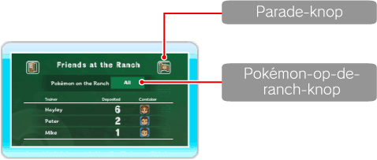
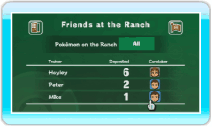
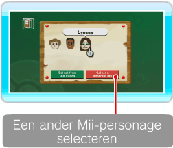
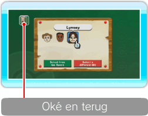
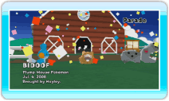

18 |
Deposit Details (ranchgegevens) |
 |
Je kunt de op de ranch aanwezige Pokémon controleren, gegevens van Mii-personages bekijken en de Pokémon Parade zien. Daarnaast kun je ook de selectie van Pokémon die je naar de ranch wilt brengen wijzigen, door te wijzen naar de Pokémon-op-de-ranch-knop en op  ● Wat is een Pokémon-verzorger? Een Mii-personage dat zorgt voor de Pokémon die door een trainer is/zijn meegenomen naar de ranch. Als je een verzorger aanstelt zullen hij of zij en de Pokémon vriendschappelijk met elkaar omgaan. 
● De Pokémon-verzorger wijzigen Wijs op het ranchgegevensscherm naar het Mii-personage dat je wilt wijzigen en druk op Een reeds op de ranch aanwezig Mii-personage als verzorger aanstellen Wanneer het verzorgerinstellingenscherm verschijnt, wijs je naar het Mii-personage dat je wilt wijzigen en druk je op Opmerking: een Mii-personage met een
Een Mii-personage dat zich niet op de ranch bevindt als verzorger aanstellen


Als je een ander Mii-personage wilt selecteren dan degene in het verzorger-instellingenscherm, wijs dan naar SELECT A DIFFERENT Mii (selecteer een ander Mii-personage) en druk op Let op: je kunt niet voor SELECT A DIFFERENT Mii (selecteer een ander Mii-personage) kiezen als je ranch het maximale aantal Mii-personages bevat. Wijs, zodra de instellingen zijn voltooid, naar OKAY AND RETURN (oké en terug) in de linkerbovenhoek van het scherm en druk vervolgens op Opmerking: de verzorgerstatus van Hayley kun je niet wijzigen. Een Mii-personage verwijderen Als je een Mii-personage in het Mii-personagekanaal verwijdert, zal deze van de ranch verdwijnen en wordt een nieuw Mii-personage automatisch als verzorger aangesteld. ● Voeg een Pokémon toe aan je Favorites (favorieten) Deze functie wordt beschikbaar als je een bepaald aantal Pokémon meeneemt naar de ranch. Zodra je Pokémon toevoegt aan je favorieten, heb je de keus om uitsluitend die Pokémon mee te nemen naar de ranch. Om een Pokémon toe te voegen aan je favorieten, wijs je naar het

● Parade Als je naar de Parade-knop wijst en vervolgens op |

 eronder is al aangesteld als verzorger op de ranch.
eronder is al aangesteld als verzorger op de ranch. -icoon naast de naam van de Pokémon. Als je hem wilt verwijderen, wijs dan naar het kroontje en druk op
-icoon naast de naam van de Pokémon. Als je hem wilt verwijderen, wijs dan naar het kroontje en druk op  |
 |
 |